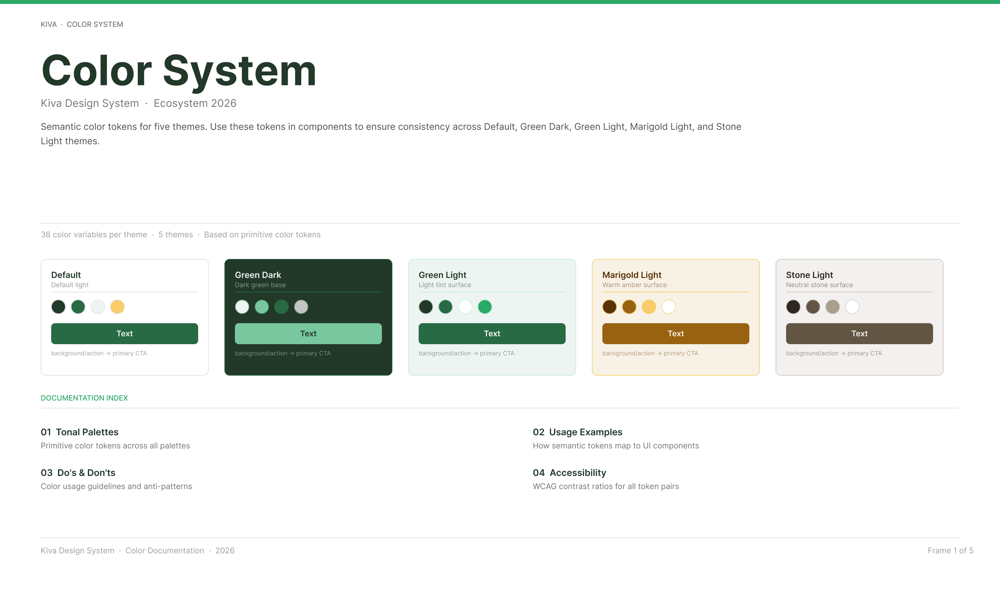

01

Kiva · Principal Designer · 2025–2026
Building an AI-Ready Design System
AI tools hallucinate because design systems aren't built for machines. Rebuilt the architecture end-to-end — three token layers, semantic descriptions, HTML and Tailwind mappings — validated across three AI tools and scaled company-wide to 100+ teammates.
90%+ AI fidelity
3 tools validated
100+ teammates
View case study →